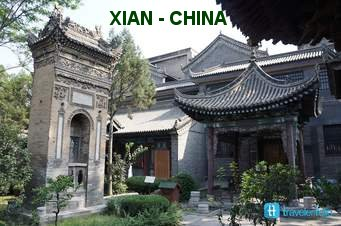

"FIDELIDADE MAIÚSCULA"
COM O CORAÇÃO REPLETO DE EMOÇÃO
Dedicou-se com todas as suas energias na realização do seu ideal missionário. De fato, nisto se pode resumir a sua vida: uma entrega total ao anúncio do Evangelho, que permaneceu bem expressa nas palavras que posteriormente na China, ele escreveu no seu diário: "Com isso, caro José, a sentença está dada: rezar, trabalhar, sofrer, resistir. Toda a sua vida deve ser dedicada aos seus queridos chineses". E com elogiável perseverança realizava a sua missão.
Assim, os Missionários começaram as suas atividades em Shan-tung, em Março de 1892. Contente de começar a ser chinês com os cristãos que o recebeu e aguardavam, estudou novamente, com muito empenho, o idioma local. Isto porque ele teria que evangelizar um imenso território com mais de 9 milhões de pessoas. As cartas que escreveu e os relatórios que enviou a Steyl e a sua família manifestavam o seu prazer de enfrentar aquela luta, da mesma maneira que estava gostando dos costumes chineses.
Todavia, é impressionante comentar a transformação que ocorreu com ele durante o seu tempo na China. Quando chegou ao país, embora desejoso de fato em realizar uma eficiente missão, estava verdadeiramente cheio de preconceitos contra a cultura chinesa. Provavelmente isto aconteceu em razão de algumas informações não muito corretas, que inicialmente chegaram ao seu conhecimento. Entretanto, o tempo realizou o eficiente trabalho de revelar a verdade. Depois de alguns anos de trabalho, em contato direto com o povo, conhecendo as suas aspirações e a grandeza do sentimento amoroso dos chineses, passou a amá-los tão profundamente a ponto de afirmar: "Amo a China e os chineses. No céu, quero continuar sendo chinês".
QUIS CONHECER A FUNDO O CORAÇÃO CHINÊS
Também se dedicou a estudar o caráter e o comportamento dos chineses. Então escreveu numa das cartas a Steyl: “Os chineses são muito inteligentes e talentosos. Mesmo os camponeses mais modestos, eles falam como se fossem doutores, e inclusive, sabem muitíssimas expressões literárias”.

BUSCA DO MELHOR CAMINHO
Os Missionários vieram com a recomendação de exercitar desde o inicio, maneiras respeitosas e eficientes para congregarem as famílias de cada local, ou de cada bairro formando Comunidades. Mas encontraram muitas dificuldades, por motivos diversos. E assim, depois de várias tentativas malogradas, solicitaram o conselho e a opinião do Bispo Raimondi, que recomendou que eles buscassem outro caminho, que escolhessem pessoas dos dois sexos, e as preparassem para serem bons Catequistas.
Padre Joseph e sua equipe gostaram da idéia do senhor Bispo e assim passaram a considerar e apreciar a importância de um leigo comprometido com o ideal cristão, no meio do seu próprio povo, especialmente atuando como Catequista, para a primeira evangelização. Sem dúvida, era um caminho também difícil, mas que poderia revelar excelentes resultados. Por isso, Padre Joseph arregaçou as mangas e se dedicou com entusiasmo e energia na formação de Catequistas, inclusive preparando um minucioso “Manual de Catequese”, em chinês. Ao mesmo tempo, junto com Padre Anzer (seu companheiro do VERBO DIVINO, que havia se tornado Bispo), esforçou-se decididamente na preparação, para uma boa formação espiritual, no auxílio e na educação permanente aos Sacerdotes Chineses e aos Missionários de outros países que também trabalhavam na China e que necessitassem dessas ajudas. Por outro lado, sempre ativo no trabalho, particularmente cheio de amor e de simpatia pelo povo chinês, realizou um marcante e impressionante esforço, para também ele, se tornar um chinês entre os chineses. E tanto era o desejo e a vontade dele, que chegou a escrever para os seus pais dizendo: “Eu amo a China e os chineses. Quero morrer no meio deles e descansar entre eles”.
DURANTE A CAMINHADA MISSIONÁRIA
Padre Freinadmetz aprendeu a descobrir a grandeza e a beleza da cultura chinesa, assim como a amar profundamente o povo a quem fora enviado. Dedicou a sua vida à proclamação do Evangelho do Amor de DEUS por todos os povos e à encarnação deste amor na formação das Comunidades Cristãs da China. Animou essas Comunidades a se abrirem em solidariedade com os povos vizinhos. Encorajou muitos Chineses a se tornarem Missionários entre o seu povo como Catequistas, Religiosos, Irmãs Religiosas e Sacerdotes. A sua vida era na verdade, uma expressão autêntica de uma frase que ele mesmo disse: «A linguagem que todo o mundo entende é a linguagem do amor».
ESTAVA PREPARADO PARA TODAS AS FUNÇÕES
 Atuou como Missionário
Itinerante, pró-Vigário, Administrador da Missão, Superior Provincial e Visitador da
Congregação. Em muitas ocasiões, sua vida esteve em risco. Sofreu violências por parte
dos que se opunham à ação dos missionários e se arriscou a ser contaminado ao cuidar dos
doentes nas regiões onde trabalhava. Preocupou-se muito com a formação dos Catequistas,
que coordenavam as Comunidades.
Atuou como Missionário
Itinerante, pró-Vigário, Administrador da Missão, Superior Provincial e Visitador da
Congregação. Em muitas ocasiões, sua vida esteve em risco. Sofreu violências por parte
dos que se opunham à ação dos missionários e se arriscou a ser contaminado ao cuidar dos
doentes nas regiões onde trabalhava. Preocupou-se muito com a formação dos Catequistas,
que coordenavam as Comunidades.
Aos poucos o povo se afeiçoou ao caridoso, ativo e incansável Padre Joseph Freinademetz, a quem eles colocaram o nome chinês de “Fu Shen Fu”, que significa “Padre Feliz”. Com muita oração, fé na Divina Providência e extremoso zelo missionário, ele e sua equipe de trabalho, com auxilio dos próprios chineses paroquianos, conseguiram construir a Igreja, o seminário, um orfanato, uma tipografia e uma escola.
Além disso, empreendeu alternadamente vários e importantes cargos de responsabilidade: foi Organizador da Região Missionária, Reitor do Seminário, Líder Espiritual dos primeiros Padres Chineses e, finalmente, o Principal da Província. Exerceu a sua autoridade como um irmão mais velho, tratando sempre os seus subordinados com respeito. E por isso mesmo, era também admirado especialmente devido à sua vida exemplar e ao seu admirável e responsável espírito de missão. Padre Joseph colocava o amor a DEUS em prioridade absoluta e total.
AJUDANDO SEMPRE OS NECESSITADOS
Uma vez enviou um grupo de órfãos do interior para a costa de Qingdao onde com certeza permaneceriam relativamente seguros. Por eles enviou uma carta ao seu correligionário de Qingdao na qual escreveu:“Eles (os órfãos) estão dependentes da ajuda de outros. Por isso peço-lhe, tenha a amabilidade de também os ajudar. Na situação em que eles se encontram, não podemos ter qualquer dúvida em fazer algumas tarefas mesmo adicionais, para ajudarmos a quem devemos salvar. E acrescentou: Penso que seria melhor vender os cavalos”.